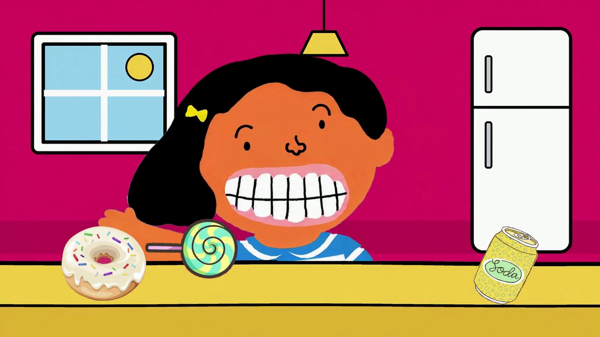
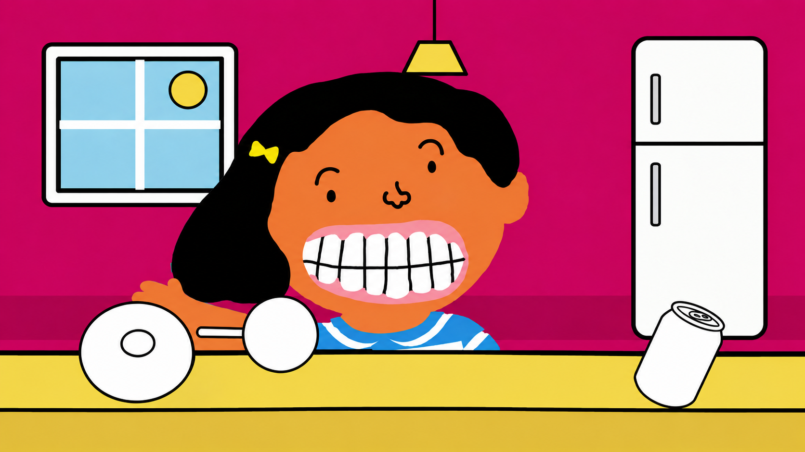
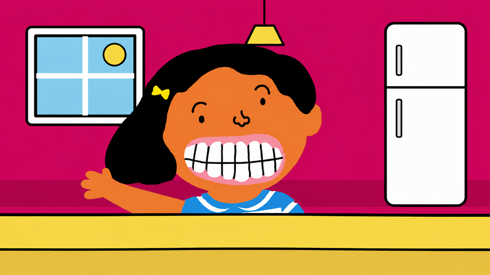
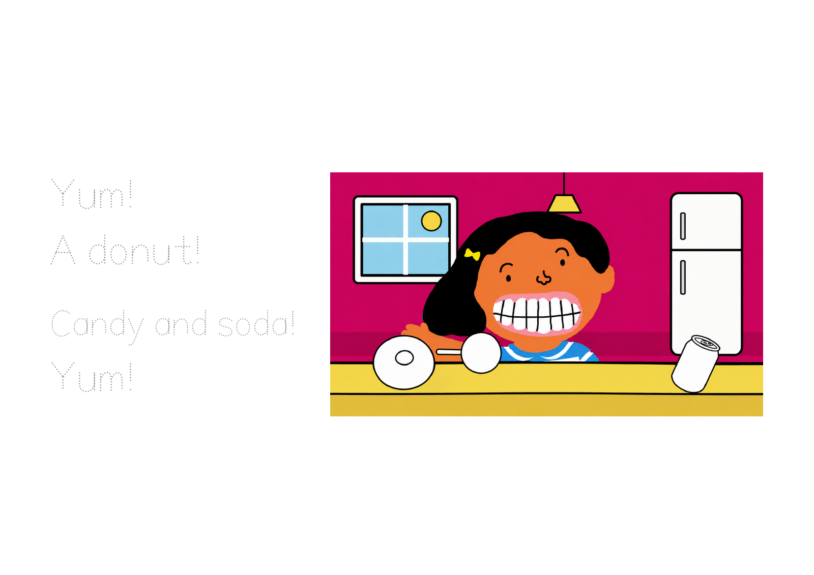

Read with me
Yum!
A donut!
Candy and soda!
Yum!
Tap a line to trace the letters.
1
Finding your writing and treats…
Level B · Month 8 · Week 4
Print the tracing workbook ↗Use the new tracing workbook. Take one clear, full-page photo of the writing and picture together. Dark pencil or pen works best. No student name is needed.
Pictures and drawings stay in this browser session. Refreshing resets the work.
This sample brings the illustration to life; it does not change the original reading video.
LET’S MAKE A STORY!
Tap Listen to hear the title. Tap the right arrow to open your book.


